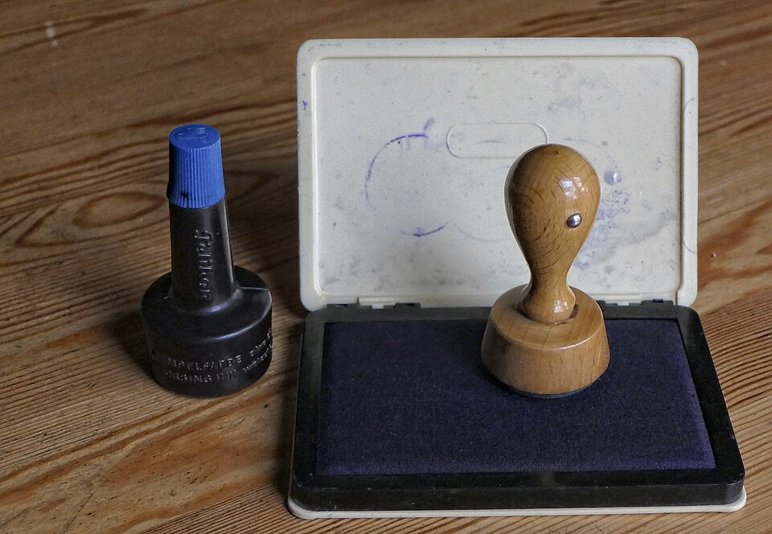

株式会社ハンノ印刷は特定国際種事業者です
環境省・経済産業省が法律（平成4年法律第75号）第33条に基づき環境大臣・経済産業大臣へ届出を行い、象牙等を取り扱うことができる事業者として登録しています（事業者番号 第03137号）。安心して象牙印材をご注文いただけます。
印材について
本象牙
ゾウの門歯から作られる印材。適度な吸湿性で手になじみやすく、加工性にも優れています。朱肉の油を吸収して使うほどに強度が増し、飴色に変化する美しい素材です。
牛角（オランダ水牛）
東南アジア・インド・アフリカ産の水牛の角。茶色や黒の天然模様がある飴色で、適度な硬さと粘り、優れた捺印性が特徴です。
黒水牛
東南アジア産水牛の黒い角を加工した印材。耐久性に優れ、角の芯（芯持）部分を使用したものほど良質とされます。
本柘（薩摩本柘）
ツゲ科・ツゲ属の国内産印材。耐摩耗性・耐久性・耐油性に優れ、乾燥後はほぼ変形しません。黄色みを帯びた美しい色合いです。ハンノ印刷では鹿児島産の薩摩本柘を使用しています。
彩樺（さいか）
北方寒冷地の真樺とフェノール樹脂を高圧加熱処理した合成木材。伸縮やヒビ割れが少なく硬度に優れ、印鑑に適したエコ素材です。独特の木目が人気です。
チタン
抜群の耐久力を誇る半永久的に使える素材。強度・耐食性・耐熱性に優れますが、製錬と加工が難しく費用がかかります。
書体について
文字数や画数により、字体の強弱バランスを調整いたします。お好みの字体見本がない場合は、下記を参考にお選びください。枠を細めに、字体のみ太めになど、ご要望にもお応えします。
- 篆書体（てんしょたい）
- 約7割の方がお選びです（実印に多用）
- 印相体（いんそうたい）
- 約2割の方がお選びです
- 古印体（こいんたい）
- 約1割の方がお選びです（銀行印・認印に多い）
- 行書体（ぎょうしょたい）
- 筆文字の書体
- 楷書体（かいしょたい）
- 浸透印でよく使われます

会社実印（役職印）価格表
通常は丸型で、円に沿って会社名を、中心部に縦書きで代表取締役印と彫ります。法務局へ登録し印鑑証明ができて初めて実印として機能します。
| サイズ | 象牙 | 牛角（オランダ水牛） | 黒水牛 | 彩樺 | 本柘 |
|---|---|---|---|---|---|
| 15mm丸 天丸サヤ付（18文字まで） | 47,000円 | 18,300円 | 14,700円 | 11,880円 | 11,170円 |
| 15mm丸 天丸サヤ付（24文字まで） | 54,800円 | 21,300円 | 17,100円 | 13,860円 | 13,030円 |
| 16.5mm丸 天丸サヤ付（18文字まで） | 49,000円 | 18,500円 | 14,800円 | 11,880円 | 11,330円 |
| 16.5mm丸 天丸サヤ付（24文字まで） | 57,100円 | 21,500円 | 17,200円 | 13,860円 | 13,200円 |
| 18mm丸 天丸サヤ付（18文字まで）【標準】 | 52,500円 | 19,500円 | 15,800円 | 12,800円 | 12,380円 |
| 18mm丸 天丸サヤ付（24文字まで） | 61,200円 | 22,700円 | 18,400円 | 14,900円 | 14,440円 |
| 21mm・24mm丸 天丸サヤ付 | 別途お見積り（お電話ください） | ||||
会社角印 価格表
領収書や請求書に捺印する重要な印鑑です。法人成りの際には必須の印章ですが、自営業でも屋号名で作っておくと便利です。
| サイズ | 象牙 | 牛角（オランダ水牛） | 黒水牛 | 彩樺 | 本柘 |
|---|---|---|---|---|---|
| 15mm天角（12文字まで） | 38,000円 | 17,300円 | 14,350円 | 11,520円 | 11,020円 |
| 15mm天角（18文字まで） | 47,500円 | 21,600円 | 17,900円 | 14,400円 | 13,770円 |
| 18mm天角（12文字まで） | 43,300円 | 17,900円 | 14,500円 | 11,670円 | 11,170円 |
| 18mm天角（18文字まで） | 54,100円 | 22,300円 | 18,100円 | 14,580円 | 13,960円 |
| 21mm天角（12文字まで） | 49,000円 | 18,500円 | 14,800円 | 11,880円 | 11,330円 |
| 21mm天角（18文字まで） | 61,000円 | 23,100円 | 18,400円 | 14,850円 | 14,160円 |
| 24mm天角（12文字まで）【標準】 | 54,000円 | 19,500円 | 15,800円 | 12,800円 | 12,380円 |
| 24mm天角（18文字まで） | 67,500円 | 24,300円 | 19,700円 | 15,900円 | 15,470円 |
| 27mm・30mm天角 | 別途お見積り（お電話ください） | ||||
個人実印 価格表
市区町村役場に届け出て印鑑証明書の交付を受けられる印鑑です。1人につき1個に限られ、25mm四方以上や8mm四方以下は登録できません（規定は各自治体により異なります）。
| サイズ | 象牙(上) | 象牙(中) | 象牙(並) | 白牛角 | 黒水牛 | 牛角 | 彩樺 | 本柘 |
|---|---|---|---|---|---|---|---|---|
| 13.5mm 丸棒 | 36,500円 | 29,800円 | 19,800円 | 12,850円 | 9,250円 | 9,000円 | 8,580円 | 7,800円 |
| 15mm 丸棒【標準】 | 41,500円 | 33,800円 | 22,500円 | 15,800円 | 11,100円 | 10,300円 | 10,120円 | 9,200円 |
| 16.5mm 丸棒 | 46,800円 | 39,800円 | 25,500円 | 18,500円 | 12,800円 | 12,600円 | 12,300円 | 11,800円 |
| 18mm 丸棒 | 60,800円 | 48,000円 | 30,500円 | 22,100円 | 15,800円 | 15,600円 | 14,400円 | 13,100円 |
個人 銀行印・認印 価格表
| サイズ | 象牙(上) | 象牙(中) | 象牙(並) | 白牛角 | 黒水牛 | 牛角 | 彩樺 | 本柘 |
|---|---|---|---|---|---|---|---|---|
| 10.5mm 丸棒 | 17,400円 | 15,200円 | 8,800円 | 6,580円 | 5,250円 | 5,150円 | 4,780円 | 4,350円 |
| 12mm 丸棒【標準】 | 22,000円 | 19,800円 | 13,500円 | 8,280円 | 6,100円 | 5,800円 | 5,650円 | 5,460円 |
| 13.5mm 丸棒 | 36,500円 | 29,800円 | 19,800円 | 12,850円 | 9,250円 | 9,000円 | 8,580円 | 7,800円 |
| 15mm 丸棒 | 41,500円 | 33,800円 | 22,500円 | 15,800円 | 11,100円 | 10,300円 | 10,120円 | 9,200円 |
| 16.5mm 丸棒 | 46,800円 | 39,800円 | 25,500円 | 18,500円 | 12,800円 | 12,600円 | 12,300円 | 11,800円 |
| 18mm 丸棒 | 60,800円 | 48,000円 | 30,500円 | 22,100円 | 15,800円 | 15,600円 | 14,400円 | 13,100円 |
※ 上記はすべて一般小売価格（税込）です。下請け価格（同業者様向け）は別途お問い合わせください。